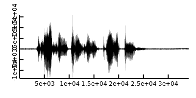
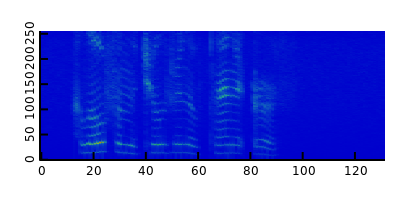
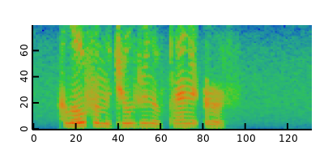
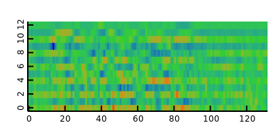

Computes type-II DCT on 1-d signal:
Dither quantized wave
Computes Mel-scale filterbank matrix
Preemphasis wave signal
Computes a magnitude 2-D spectrogram from a time-domain 1-D signal
Computes log-Mel filterbank (FBANK) feature from spectrogram signal and Mel matrix
Computes MFCC feature from log-Mel filterbank (FBANK) feature
Compute Wave -> Spectrogram -> FBANK -> MFCC eventually
- preemphasised and dithered wave

- power spectrogram

- log-Mel filterbank (FBANK)

- Mel-frequency cepstral coefficients (MFCC)

1 import dspeech.plot : docDir, docWav, plotVector, plotMatrix; 2 import dffmpeg : Audio; 3 import mir.ndslice : map, sliced; 4 5 auto raw = Audio!short().load(docWav); 6 auto wav = raw.data.sliced.dither(1.0).preemphasis(0.97); 7 wav.plotVector.save(docDir ~ "dspeech.feature.speech_wav.png", 400, 200); 8 auto sp = wav.spectrogram(512, 256); 9 sp.plotMatrix.save(docDir ~ "dspeech.feature.speech_spectrogram.png", 400, 200); 10 auto fbanks = sp.toFbank(melMatrix(sp.length!0, 80, cast(double) raw.sample_rate)); 11 fbanks.plotMatrix.save(docDir ~ "dspeech.feature.speech_fbank.png", 400, 200); 12 auto mfccs = fbanks.toMfcc; 13 mfccs.plotMatrix.save(docDir ~ "dspeech.feature.speech_mfcc.png", 400, 200);
Speech feature extraction module
See also: - "Chapter 5 Speech Input/Output," HTK book 3.5 alpha1, pp. 89 - 1 - https://github.com/jameslyons/python_speech_features
TODO: preemphasis and dither